c
a * cIntroduction to R
Overview
By the end of this lab you will:
- log into Posit Cloud and join your lab group space
- learn basic R syntax and use R as a calculator
- discover the importance of the order code is run in
- create a neatly formatted HTML file by knitting an R Markdown file
Tools We Are Using
For this course we will be using R (R Core Team 2021) and RStudio as the main tools for conducting quantitative analysis.
R and the basic versions of RStudio are free and open-source software. There are ‘free’ as in cost, but - more importantly - they are free software that guarantee users four foundamental freedoms. As explained on the FSFE’s What is Free Software? page, these are:
- Use: Free Software can be used for any purpose and is free of restrictions such as licence expiry or geographic limitations.
- Study: Free Software and its code can be studied by anyone, without non‐disclosure agreements or similar restrictions.
- Share: Free Software can be shared and copied at virtually no cost.
- Improve: Free Software can be modified by anyone, and these improvements can be shared publicly.
Even though R appeared in the early 90s, it has been gaining a lot of popularity in recent years. A main contributor to its success is being free software, with a large community of people contributing improvements to R directly as well as extending it with further additional software packages. In fact, it is now one of the most common software for doing statistics in academia.
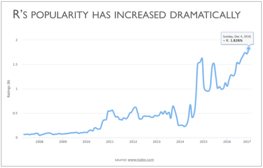
R and RStudio are two separate things. R is the actual programming language and the main processing tool which does the computations in the background, whereas RStudio integrates all functionalities into a (relatively) friendly and interactive interface. In short, for this course (and most of the time in practice) you chiefly use RStudio whilst R is doing all the work in the background. Thereafter, we will refer to R, as the integrated interface.
New terms
R: a programming language and environment for data analysis.RStudio: a user-interface for working with R.Posit Cloud: website for running RStudio in a browser.
Why R?
At this point you may be wondering why you need to bother learning these tools. In the following sections you will see some of the advantages and examples that can be achieved using R.
R: a flexible tool
R can be applied in a wide variety of fields and subjects, including not only those in the social sciences (e.g. sociology, politics, or policy research), but also in the humanities (e.g. history, digital humanities), natural and physical sciences (e.g. biology, chemistry, or geography), health (e.g. medical studies, public health, epidemiology), business and management (e.g. finance, economics, marketing), among many others.
The broad application of R is due to its flexibility which allows it to perform a range of tasks related to data. These cover tasks at initial stages, such as downloading, mining, or importing data. But it is also useful to manipulate, edit, transform, and organise information. Furthermore, and most important for us, there are a set of tools that allow us to analyse data using a range of statistical techniques. These are useful to understand, summarize, and draw conclusions about samples, e.g. people.
Lastly, R is powerful to communicate and share information and documents. There are several extensions (called packages in R) that can help to produce static and interactive plots/charts, maps, written reports, interactive applications or even entire books! In fact this workbook was written from RStudio.
R works in a command-based Console environment. This means that you need to call the commands (or functions, as they are called in R) through writing text. This can look intimidating at first glance. But do not worry, we will guide you step by step. Importantly, that these commands can be used and combined in multiple ways is what gives R its incredible flexible. Once you get the hang of these you will find that they are faster and more powerful than using a button and menu based interface. RStudio also helps make working with R more accessible.
New terms
We will cover these in more detail in future weeks, but as initial short definitions:
Package: a collection of ready-made R tools - such as functions with help pages, and sometimes example data - that you can install (and later load) to add features to R.Function: a named reusable set of instructions that can take inputs (referred to asarguments), run some steps, and return a result.Argument: input provided to a function that tell the function what to use and how to behave.
Advantages of using R
Some advantages of using R:
- It is free and open source software. You do not need to pay for a licence. You can then use it anywhere at any time, even if you do not have an affiliation to an institution or organisation (e.g. University or workplace);
- It is a collaborative project. This means that it is the users who maintain, extend, and update its applications;
- It is reproducible. Research can be more transparent since you will get the same results every time you run your analysis through a specific pathway (i.e. through R Markdown files);
- High compatibility. You can read and produce most types of file extensions;
- Online community. There are a number of easy-access web resources to support you in the learning process.
Getting started
Setting up RStudio
There are multiple ways to work with R. One, and by far the most common, is to download both R and RStudio Desktop and install the applications on your local device.1
On this course, we use Posit Cloud instead. Posit Cloud provides an on-line version of RStudio that does not require installing any additional software. You can run it directly from your browser (e.g. Chrome, Firefox, Safari, etc), including if using a Chromebook or tablet. This makes it easier to access your RStudio projects and files within the labs and when using your own devices.
To get started with Posit Cloud, follow the next steps:
Part 1 Create a Posit Cloud account
- Click on this link Posit Cloud - SSO, which should automatically open a new tab in your web browser or go directly to the browser and copy this URL: https://sso.posit.cloud/glasgow;
- Click ‘Log In Via University of Glasgow’ which will take you to the usual University of Glasgow login pages;
- Enter your University of Glasgow email address and password in the login page as normal;

- Done! After logging in with your University of Glasgow account, you will be taken to your personal RStudio Cloud workspace;
Part 2 Join your lab group
You will have received a link via email to join your lab group on Posit Cloud (the link will be available within your Lab Group forum on Moodle too). Note, you must use this specific link to join and access your lab group workspace, as each link is unique to your group. So, only use your group’s specific link.
- Copy and paste the link in your web browser. You should see the following window:
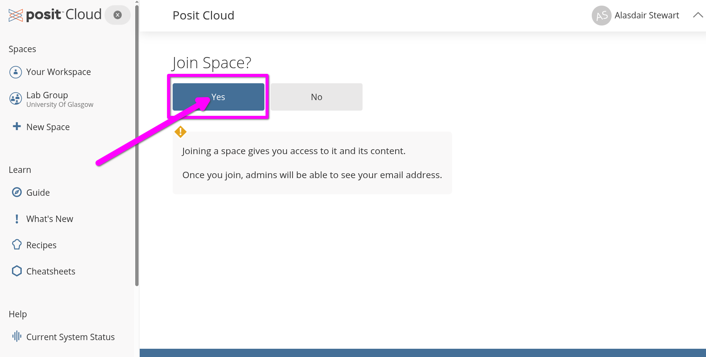
- Join your lab by clicking the ‘Yes’ button shown above.
Part 3 Create a New Project
- Open the shared space form the left-hand side pane called ‘Lab Group …’ (where … is your Lab Group number).
- Click the blue ‘New Project’ button on the right of the screen.
- From the menu list that opens select ‘New Project from Git Repository’.
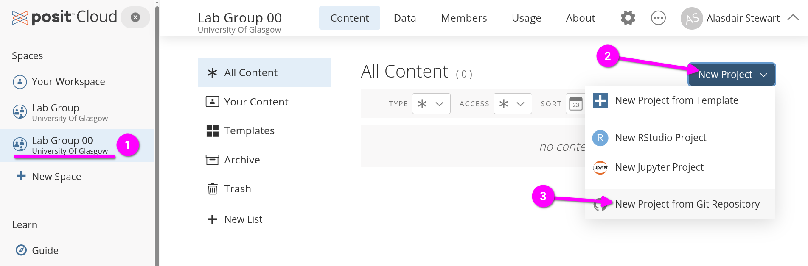
- Within the dialogue box that opens, copy and paste the link below into the ‘URL of your Git Repository’ field.
https://github.com/UGQuants/Labs-1-2- Click ‘OK’ to create the new project.
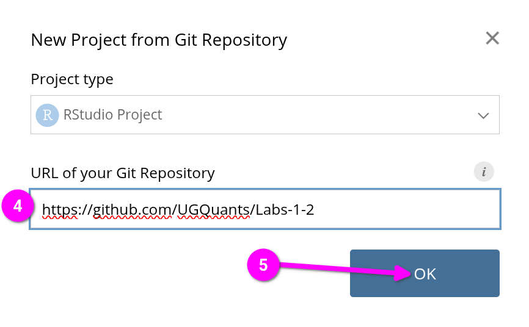
RStudio environment
Getting started
After your new ‘Labs 1-2’ project is created Posit Cloud will automatically open it in RStudio and you will see the screen below:
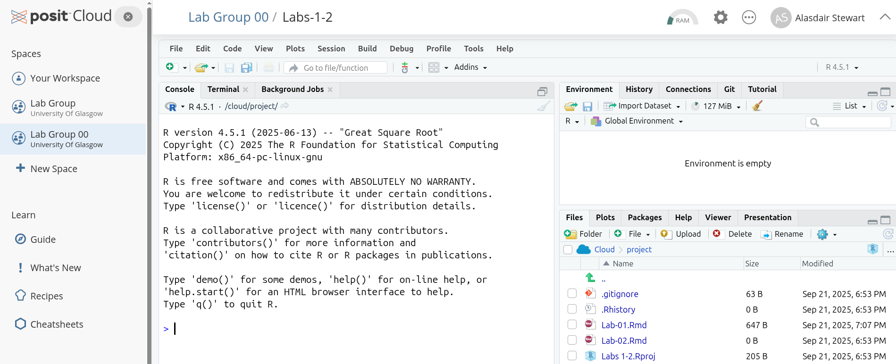
- In the bottom-right ‘Files’ pane, click “Lab-01.Rmd”.
- That will open a new pane in the top-left, within the yellow banner in it click ‘Install’.
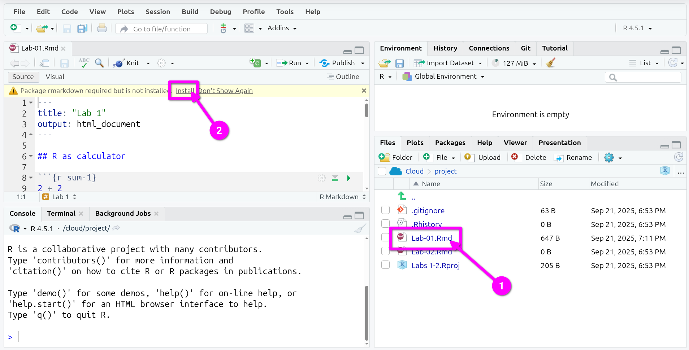
The bottom-left pane will now switch to the “Background Jobs” tab and you will see a lot of red text. Despite the colour, this is expected behaviour. RStudio is now installing the rmarkdown package that makes it possible to work with R Markdown files in RStudio (more on this later). Once it finishes installing, the tab will automatically switch back to “Console”.
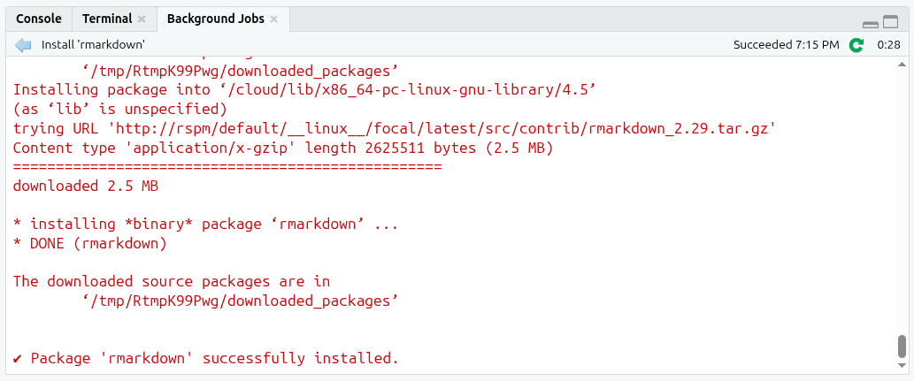
R Markdown is a file format (.Rmd) that lets you write text and run code in the same document. You write your narrative text and add your code within code chunks. When you Knit (render) a R Markdown file, R runs the code chunks from top to bottom and weaves their outputs (numbers, tables, plots) into a finished ‘knitted’ report (such as HTML or PDF). This makes your analysis transparent and reproducible, whereby anyone can see what code produced each result. When learning R, it also makes it great for making notes alongside the code.
New terms
We will cover R Markdown in more detail across the next few weeks, but some initial short definitions:
R Markdown: a file format that mixes text and code, using simple syntax for formatting text and code chunks for adding and running code.code chunk: a fenced block in an R Markdown file for adding R code; as well as being run when you knit the file, each code chunk can be run on its own within RStudio.knit: render an R Markdown file into a specified format (e.g. HTML or PDF) by running all code chunks from top to bottom and creating a knitted document combining the text with the output from the code.
RStudio screen
After this, your RStudio screen will be split in four important windows or panes as shown below:
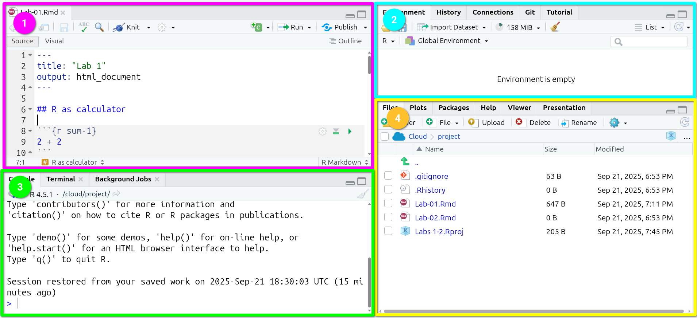
- In Pane 1 (purple), you have the Lab-01
R Markdownfile.
This is the area where you will be working most of the time. From here, you will write text and code. Code chunks are shaded grey, with each starting with ```{r optional-name} and ending with ```. (The ` is called a back-tick, and on UK keyboards is the key to the left of 1.)
- In Pane 2 (blue), you have the “Global Environment”.
This is one of the most useful tabs in this pane. It shows you the active ‘objects’ that you have available/loaded in your current R session (this will make more sense in the coming sections).
- In Pane 3 (green), you have the R Console.
This is where you will see most of the results of the code you run (pane 1). You can also write and run code from here, by typing the code and hitting enter. Note, it is best practice to have code necessary for your analysis saved in your R Markdown file. The Console is usually used instead to quickly run code that you do not want to save in your file.
- Finally, in Pane 4 (yellow) you have multiple useful tabs.
In the File tab you can see the files and directories that you have in your R project.
In the Plot tab you will see a preview of the static plots/charts you will be producing from your script.
In Packages, you have a list of the extensions or plug-ins (called ‘packages’ in R) that are installed in your working environment.
The Help contains some resources that clarify or expand what each of the functions does. Again, probably this will make more sense once you get started. We will come back to this later.
Finally, the Viewer displays interactive outputs.
Note, code chunks (the shaded grey fenced blocks) for writing code into have been set up for you this week. Remember though you can also write regular text as well outside of these chunks to record any notes:
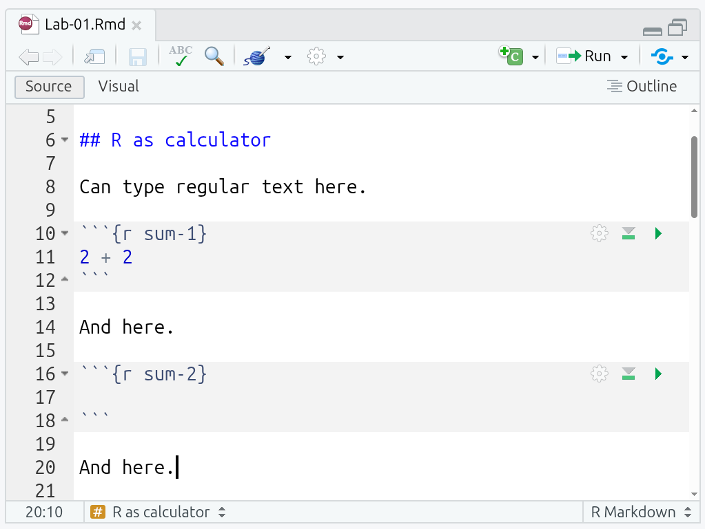
Hands on R
Now you are ready! It is your turn to start exploring and getting familiar with R by completing the following activities.
R as calculator
In your ‘Lab-01’ R Markdown file, look at the code chunk named “sum-1” containing 2 + 2. Let’s run it!
To run a code chunk, you can click on the Run green arrow situated on the top right corner of it. Alternatively, if your text cursor is inside the code chunk you can press Ctrl+Shift+Enter on your keyboard.
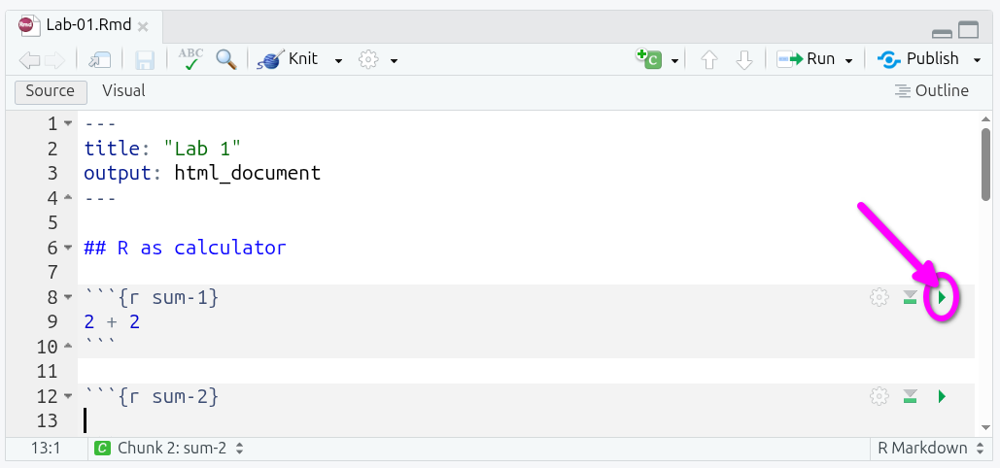
What you will see after running the chunk is:
- In the R Markdown file,
[1] 4underneath the code chunk. - In the Console, both
> 2 + 2and[1] 4.
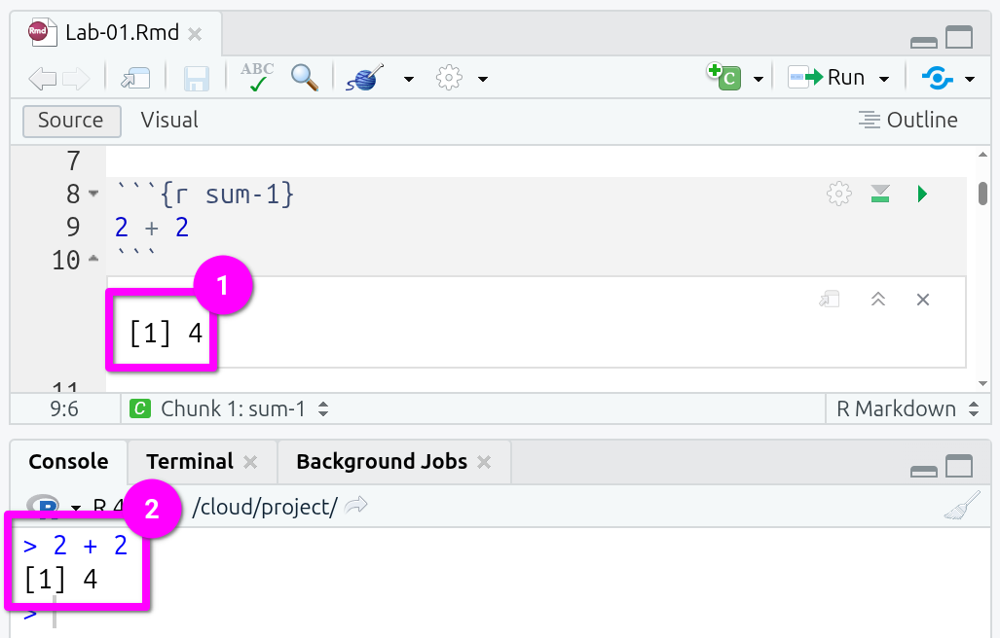
Why do we see this? When you run a chunk, RStudio sends the code to the Console for R to run it, so you see the code echoed and its raw output there. RStudio also shows the results inline under the chunk so you can see the output in context. (This also becomes important later with graphs and formatted tables that cannot be viewed in the Console.)
What does the [1] mean? It’s a label R adds to printed results, where [1] just means “this line starts at item 1”. If there were lots of items, the next line might start [7] or [15].
Of course, you can also go to the Console, write a simple calculation, and run it by typing ‘Enter’, as shown below:
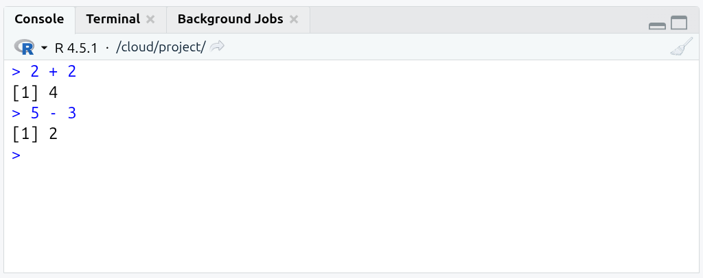
It’s also possible to run multiple calculations in a single chunk. Add a line for 5 * 5 and 21 -4 in the empty “sum-2” chunk and then run it. (Hint: Use the green triangle top-right of the code-chunk to run it.)
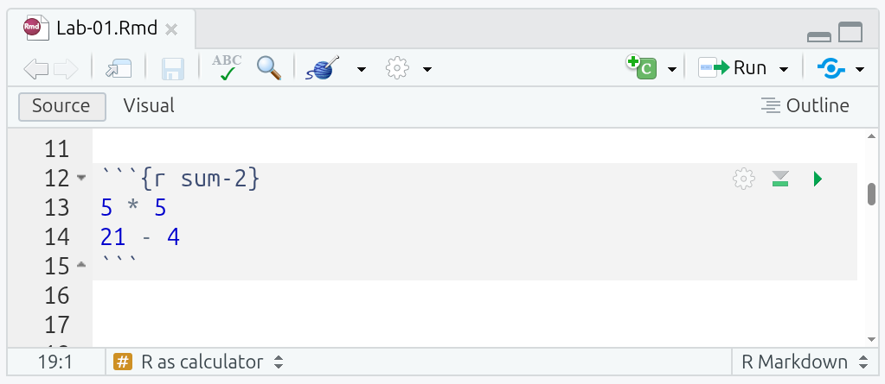
Try different operations such as 50 / 20 or 3 * 5, whether adding to the code chunk or directly in the Console.
Fairly simple, right? And don’t forget, it is normal to copy and tweak existing code. A lot of learning to code involves going through working examples and tweaking it to work with what you are trying to achieve. Unlike writing an essay or an exam, you don’t actually need to know and write code “off the cuff” or have all necessary code syntax and functions memorised. So, don’t worry if you feel like you are just making minor changes to existing code, that’s how it’s supposed to work. The crucial thing is learning how the code works, so you know what to tweak for your analysis. And, the first few weeks is all about getting comfortable in using R, then the level of challenge will go up.
Let’s continue with the next activities!
Testing logical operators
Now, run the “logical-1” code chunk in the R Markdown file.
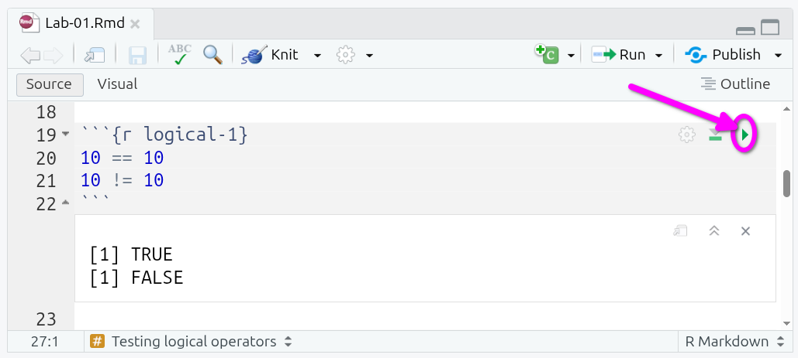
Now, in the “logical-2” code chunk, add the following and then run it:
1 == 51 > 55 < 10'this' == 'this''this' == 'that''this' != 'that'
(Note, if you receive an “Error: object ‘this’ not found’” message, check you are using single quotes and have 'this' rather than this.)
What do you see running the code chunks? Why is R outputting these results? …
When you use the double equal sign == you are asking R whether the value on the left hand-side of the operator is equal to the one on the right hand-side. Likewise, when you combine the exclamation mark ! with another operator, you get the reversed result. For example, != is interpreted as “is not equal to”, that is why 10 != 10 returns FALSE, but 10 == 10 returns TRUE.
R can process different classes of inputs. In this case we used a letters and we asked R whether ‘this’ was equal to ‘this’, and of course the result is TRUE. Note that when you want to input text (referred as character values in R), you need quotation marks, 'text'. If you want to enter numeric values, you simply input the raw number without quotation marks. These are then treated as numeric ‘class’ values.
You can use the class() function to check what something is in R. For example, try running class(42), class('42'), and class(TRUE) in the Console.
Perhaps logical operators do not make much sense at this point, but you will find out later that they are useful to manipulate data. For example, these are essential to filter a data set based on specific rules or patterns.
New Terms
class: an object’s classification in R that informs how R handles it.character: text in quotes, such as “Glasgow”. ('42'as it is in quotes would be treated as character)numeric: real or decimal numbers, such as42or5.1.
Assigning values to ‘objects’
In R, it is common (and practical) to store values or data as ‘objects’. Once values are assigned to them, objects are then stored in your current R session. Assignments are made using object_name <- value, such as a <- 5 or b <- 'Glasgoow'. Let’s try it!
Go to the “assign-1” code chunk run it by clicking the green arrow/triangle or - with your text cursor within the code chunk - using Ctrl+Shift+Enter.
What do you observe? Pay attention to what appears under the code chunk and in the Environment pane (the top-right of the four panes). Why are the values different? …
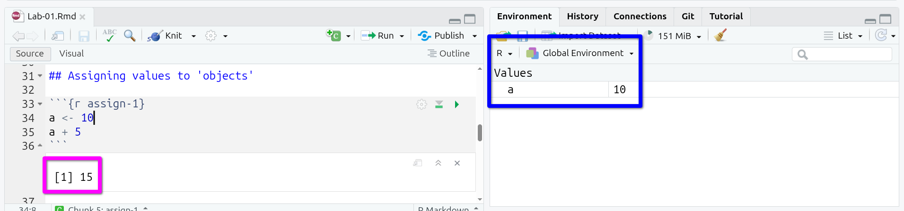
The operator <- assigned the numeric value 10 to the object a (on the left hand-side of the arrow). The next line used the object (a) to compute a sum (i.e, a + 5). Only the assignment is stored in the session environment (the a <- 10) and assignments do not return an output, so only the result of a + 5 is shown under the code chunk when run.
To see this, within the “assign-2” chunk add c <- 3 and run it:
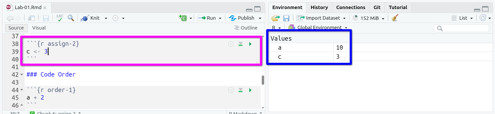
Now, add and run the following in the “assign-2” chunk:
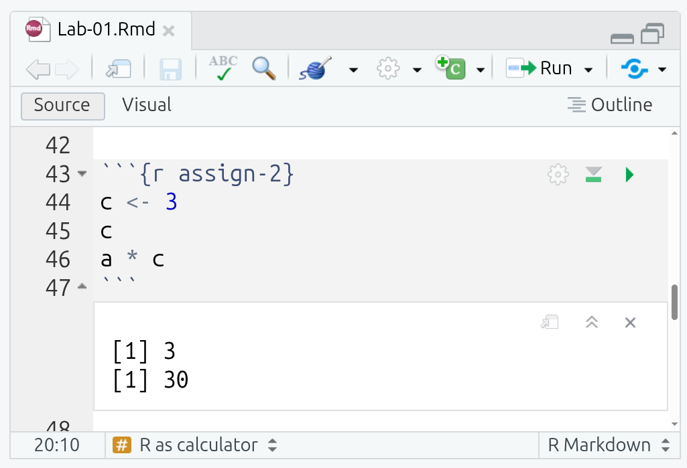
c and a * cAs you can see, running c on a line by its own returns the numeric value 3 stored in the variable c. Then, a * c calls the previously created object a and multiplies it by c (a * c is effectively 10 * 3). Note, most programming languages, R included, do not use x for multiplication and use * instead. One reason for this is because x could also end up as a named object, x <- 2.
In the same way as you assigned these simple variables, you will store other types of objects later, e.g. vectors, data frames or lists. This is useful because those objects will be ready in your session to do some computations.
Code Order
There are a few things to note when assigning objects to variables. If you assign a different value to the same object, e.g. by running a <- 5, you will replace the old value with the new. So, instead of having a representing the value 10, you will have 5.
You can see the objects available in your session on the Global Environment (‘Environment’ tab in top-right pane) as shown below.
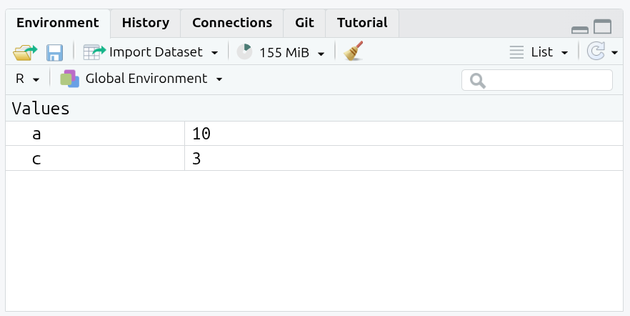
Now, let’s see what happens if change value of a:
- Run the “order-1” code chunk that contains
a + 2. - Now in the Console type and run
a <- 5. - Run the “order-1” code chunk again.
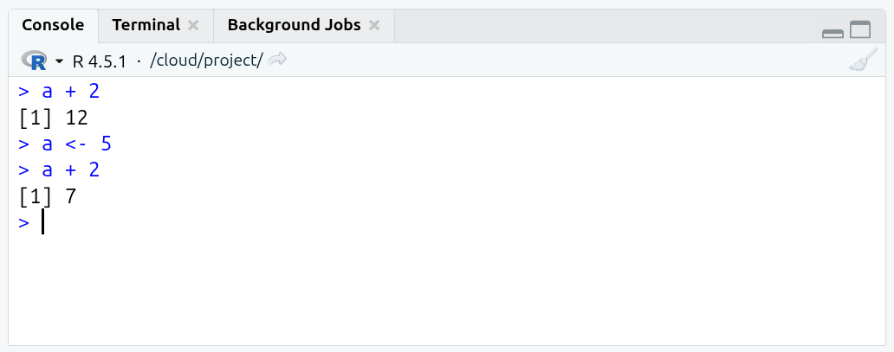
a + 2 before and after assigning new value to aAs can see, the code in the “order-1” chunk remains the same, but the result from running the code changes based on the value assigned to a. That may seem an obvious point to make, but a large proportion of unexpected results and errors arise from changing what is assigned to an object.
A good rule of thumb then when a code chunk that was previously working suddenly returns unexpected results or an error message is to run your code from the top-down. Thankfully, RStudio also makes this easy to do. To ‘Run All Chunks Above’ a specific code chunk, click the downward facing grey arrow/triangle with a green line under it (see image below!). After that, you can click the green arrow/triangle to ‘Run Current Chunk’.
Do that for the ‘order-1’ chunk and it will return 12 again:
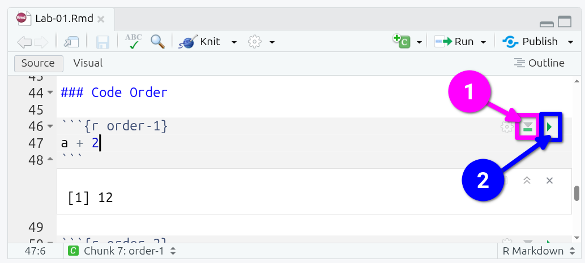
It is also possible to use an object in a calculation and assign the result of that calculation back to the object. For example, a <- a + 5 is equivalent to a <- 10 + 5. Whilst that can be perfectly valid to do, care needs to be taken as now a is 15. What do you think would happen if you keep running the same a <- a + 5 line of code?
Go to the “order-2” code chunk and run it multiple times, looking at the result underneath the chunk and the value for a in the Environment pane.
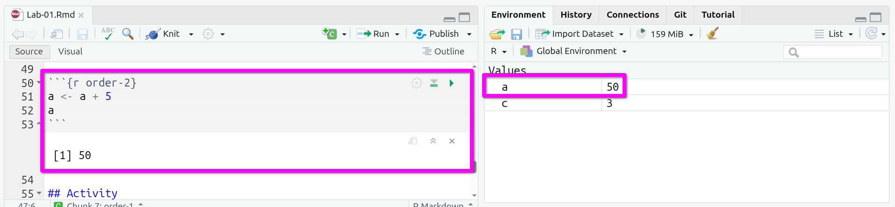
a after running “order-2” chunk multiple timesAgain, you can ‘Run All Chunks Above’ (downwards grey arrow/triangle, green line) and ‘Run Current Chunk’ (green arrow/triangle) to restore a to value it would be if only ran each code chunk once top to bottom.
This is a good start, great job!
Note that the changes made in your R Markdown file are saved automatically within RStudio when using Posit Cloud. To verify this, have a look at the name of your file in the top-left of pane 1. If changes are due to be saved, the name will be written in red with an asterix at the end, Lab-01.Rmd*. If it is in red, save changes manually by clicking on the disk icon. After you have made sure your changes are saved, you are safe to end your session by closing the RStudio Cloud tab in your browser.
New Terms
object: any data or function stored in memory and usually bound to a name in an environment.assignment: bind a name to an object in an environment with<-, creating or updating that binding (e.g.a <- 10).environment: a workspace that maps names and objects (the main one is the Global Environment, which can see in the top-right panel in RStudio).
Activity
Discuss the following questions with your neighbour or tutor, and write notes from your discussion in your R Markdown file:
- What are the main differences between working in a
R Markdownfile (pane 1) and directly on the console (pane 3)? - Can you describe what happens when your run the following code? (tip: look at the environment tab in pane 2)
object1 <- 10
object1 <- 30- Click the ‘Knit’ button in the bar at the top of the R Markdown file (pane 1). This will turn your R Markdown file into an HTML document.
(Note: Another reason code chunk order matters. When you ‘knit’ an R Markdown file, the code chunks are run top to bottom in a fresh R session.)
Lab Workbook Lab Workbook Lab Workbook Lab Workbook
R Core Team. 2021. R: A Language and Environment for Statistical Computing. Vienna, Austria: R Foundation for Statistical Computing. https://www.R-project.org/.
If you have prior experience working with coding environments, such as Visual Studio Code, you may want to take a look at Positron. It is based on Visual Studio Code and setup to have a similar panel layout as within RStudio. One of the benefits of open-source software is having this diversity of tools can pick from. It is advised though for this course to stick with Posit Cloud and RStudio.↩︎